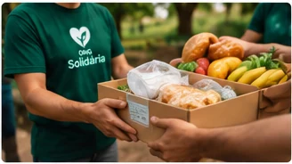
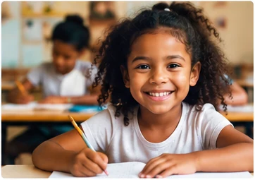
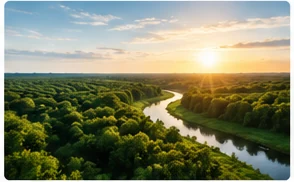
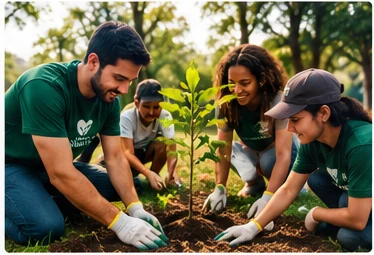

Nossas ações
Nossos projetos são desenvolvidos para atender necessidades da comunidade e estimular a participação de voluntários e apoiadores.
Projeto Alimentação Solidária

Arrecadamos alimentos e organizamos ações de distribuição para contribuir com famílias em situação de vulnerabilidade social.
Como contribuir
É possível contribuir com alimentos, recursos financeiros ou trabalho voluntário.
Projeto Educação e Oportunidades

Buscamos apoiar ações educativas e criar oportunidades de desenvolvimento para crianças e jovens.
Como participar
Voluntários podem colaborar em atividades educativas e ações de apoio.
Projeto Sustentabilidade

Promovemos conscientização ambiental e iniciativas voltadas à preservação dos espaços naturais.
Participe das ações
Você pode participar de campanhas, atividades educativas e ações comunitárias.
Voluntariado

O trabalho voluntário é uma das formas de transformar tempo, conhecimento e disposição em ações concretas para a comunidade.
Como participar
Para demonstrar interesse, preencha o formulário de cadastro e informe suas áreas de interesse.
Como fazer uma contribuição financeira
As contribuições financeiras ajudam a manter projetos, adquirir materiais e ampliar o alcance das ações sociais.
Formas de contribuição
Após o cadastro, nossa equipe poderá orientar sobre as formas disponíveis para apoiar a organização.